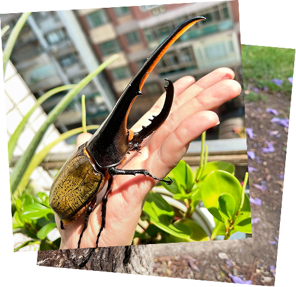
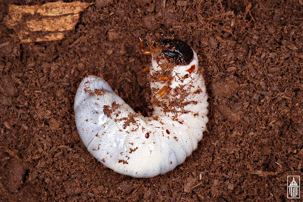

新手必讀：飼養長戟大兜蟲的五大重點
JUNE 25, 2025
長戟大兜蟲（Dynastes hercules）是甲蟲界的巨人，也是無數蟲迷的夢想品種。如果你正準備踏入飼養世界，以下五大重點，將是你成功與否的關鍵。
🧱 ① 飼育空間：大隻甲蟲，就要大空間
長戟成年雄蟲體長常超過15公分，活動力強、掙脫能力高，因此飼育箱建議使用：
最小尺寸建議：寬 30cm × 深 20cm × 高 25cm
墊材厚度：至少 8～10 公分，利於保濕與固定身體
建議使用滑面塑膠箱或專用甲蟲箱，避免抓牆翻身卡死
✅ 小提醒：
記得箱蓋要透氣但防逃，可加細紗或鋪設止滑墊以防爬出。
🌙 ② 行為習性：夜行性、不愛動，不代表不健康
長戟白天多半藏在墊材下，進入「靜止模式」，晚上才開始移動與進食。新手常見誤會：
以為不動＝生病，其實是牠們正常作息
強行挖出觀察會造成壓力，甚至導致死亡
✅ 小提醒：
可用夜間紅光觀察燈來看活動狀況，減少干擾。
🍎 ③ 飲食管理：果凍是主食，水果是點心
長戟主食為「甲蟲專用果凍」，富含蛋白質與糖分，餵食要點如下：
果凍建議每天更換，特別是高溫天氣
水果如香蕉、蘋果可偶爾餵，但易吸引螞蟻與發酵
避免餵食過量或讓食物變質，會導致拉肚子或死亡
✅ 小提醒：
若果凍不吃，可嘗試不同品牌或口味，有些甲蟲有偏好！
⚠️ ④ 飼養方式：單獨飼養最安全，配對需觀察
長戟雄性爭鬥性強，會把對手推翻甚至攻擊，因此建議：
一箱只放一隻成蟲
若要繁殖配對，僅限短時間接觸，並全程觀察行為
發生推撞、持續纏鬥，須立即分離，否則會咬傷對方翅鞘
✅ 小提醒：
雌蟲通常較安靜，但配對後仍需分開飼養，防止過度消耗體力。
⏳ ⑤ 成蟲壽命與照護：把握每一天，陪牠好好活著
長戟大兜的成蟲壽命約 3～6 個月不等，影響壽命的因素包含：
幼蟲期營養是否充足
成蟲期環境是否穩定（溫度、濕度）
過度打架或交配導致提早死亡
良好照護建議：
維持室內溫度約 20～26°C
每週檢查墊材是否乾燥或發霉
定期觀察是否有異常行為（如翻身無法爬起、食慾減退）
✅ 小提醒：
成蟲期短，但只要用心照顧，就能留下難忘回憶與成就感。

🔹 幼蟲飼養準備：
環境與器材
飼養容器建議使用 10L～20L 的塑膠箱或寵物盒，依幼蟲大小與數量決定。
注意：容器須有蓋子防止逃脫或乾燥，但也需保留通氣孔。
飼育土（發酵木屑）使用發酵腐植木屑（俗稱「菌床」、「腐葉土」）是飼養兜蟲幼蟲的關鍵。pH值略酸，保濕力佳，可供食用與挖掘。鋪設厚度至少 15～20 公分（依體型增加），可模仿自然棲地。
濕度與通風
土壤濕度以抓起能成團、但不滴水為最佳。
每週翻蓋檢查，避免土壤過濕或發霉。
🍽 幼蟲餵食：吃土才是王道
長戟幼蟲是腐植性昆蟲，主要靠「吃土」長大。
使用的木屑必須充分發酵，否則不利消化甚至可能導致死亡。
約每 2~3 個月更換一次部分飼育土，同時清除糞便。若想加速增重，可嘗試在 L3 時期（終齡幼蟲）添加少量蛋糕糞土或營養菌土，但需小心控制比例與衛生。
🌡 溫度管理建議
最佳溫度：22°C～26°C
過高（高於30°C）：會導致活動異常或發育不良。
過低（低於18°C）：成長速度大幅下降，甚至冬眠停食。
可用保溫墊、環境控溫器或室內穩定空間協助維持。
⚠️ 常見問題與注意事項
Q：可以飼養多隻在一起嗎？
A：不建議。長戟幼蟲會互相干擾、甚至誤咬對方蛹室，請分開個體飼養。
Q：飼育土多久更換一次？
A：每 2～3 個月更換 1/2 或 1/3 並補新發酵木屑即可。若出現白色霉菌或臭味應全部更換。
Q：看不到幼蟲怎麼辦？
A：牠們喜歡躲在深處，可觀察土壤表面的糞便量來推測活動情況，不建議頻繁挖掘。
🧪 小撇步：讓你的長戟變大隻！
使用品質穩定的發酵木屑（例如高級菌床）
保持適溫＋少打擾
提供足夠空間與厚實土層
減少搬動與干擾，讓牠安穩成長